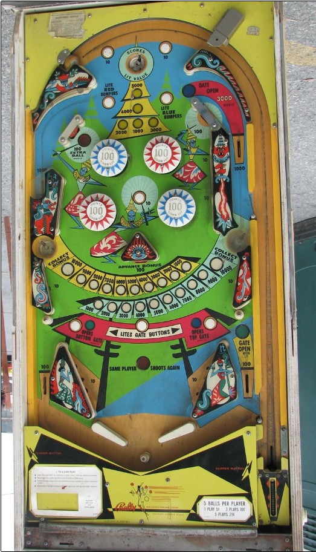

Plunge the top hole whenever possible. If the top hole value is low, see if you can get a plunged ball to roll over a couple of the 10-point buttons at the top of the playfield to advance the top hole value before settling there. Once the ball comes to the flippers, the only things worth shooting are the side saucers. Each side saucer has its own bonus which can be advanced to as much as 10,000 points; making a saucer collects the bonus on that side, resetting it to 1,000, but then advances the other side's bonus the value equal to what you just collected.
The below picture of Bali-Hi's playfield was taken from the Internet Pinball Database, where it was initially provided by Jay Stafford.
At the top of the table is the top hole surrounded by 4 rollover buttons. The upper buttons score 10 points. The lower left and right buttons score no points, but they light the red and blue pop bumpers respectively for the rest of the ball. Lit bumpers score 100 points, while unlit bumpers score 10. The top hole scores the lit value; any 10-point switch anywhere in the game rotates the top hole value between the values of 1,000, 2,000, 3,000, 4,000, and 5,000 points. When the top hole value is exactly 4,000, the standup target near the upper left pop bumper is lit for extra ball.
The upper left lane scores 1,000 points and kicks the ball upwards, where it is then curved across the top of the playfield horizontally. A ball kicked out of this kicker will likely not find its way to the upper right gate lane, but it will usually press one or both of the rollover buttons that light pop bumpers.
If the upper gate is lit (see below), the upper right lane scores 3,000 points and returns the ball to the shooter lane for a replunge. If the upper gate is not lit, the upper right lane scores 1,000 points and feeds the right saucer; however, the ball will usually be going fast enough that it does not settle in the saucer and is flicked toward the flippers.
There are three rollover buttons in the lower half of the playfield. The middle button of the three lights the two outer buttons in the set. The left button, when lit, opens a gate in the right out lane. The right button, when lit, opens the gate in the upper right lane. Using a gate closes that gate and unlights the corresponding lower button. Gates also automatically close if the ball drains or is tilted.
The lower left and right saucers each have their own bonus ladder, which counts of multiples of 1,000 points up to 10,000. At the start of each ball, both bonuses have 1,000 points. Hitting the extremely dangerous Advance Bonus standup target in the center of the playfield advances both bonuses once. Shooting into either side saucer scores the bonus for that saucer, adds that saucer's bonus to the other saucer (subject to the 10,000 maximum), and then resets the bonus of the made saucer back to 1,000 points. Despite the saucer values being called "bonus", this value is not awarded if the ball drains. The only way to score a bonus is to shoot the lower left or right saucer.
There are no in lanes. Flippers back up directly to the slingshots. Full size three inch flippers are used. Slingshots score 10 points. Out lanes score 100 points. The right out lane has a gate that, when opened, redirects the ball back to the shooter lane for a replunge. The gate is opened as described in the "Opening gates" section above.
There is no end of ball bonus. Tilt ends the ball in play only. Extra balls are earned by hitting the upper left standup target (near the top blue bumper) when the top saucer value is exactly 4,000 points. Maximum one extra ball per ball in play.